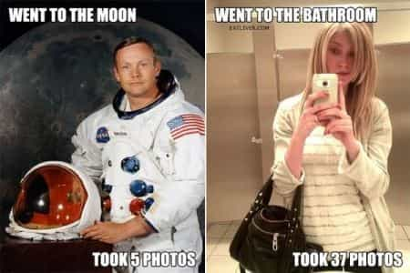
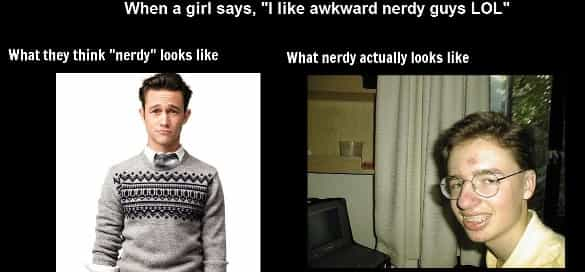

< < < Back
Dictionary Of American Girlspeak, Volume I – Return Of Kings
American Girlspeak, though seemingly intelligible, is actually quite different from the language men like you and I use. While ours is a relatively straight-forward and functional lexicon, theirs is one ridden with obfuscating euphemisms, ambiguity, and double-speak. Words that mean one thing to us, can mean an entirely different thing to them. For better or worse—if you expect to transact with those who speak the female tongue (who, of course, aren’t always women)—you need to be equipped with the proper linguistic equipment.
awkward
1. malleable word most often deployed as a no-fault excuse for inept, lazy, or outright rude social behavior. 2. also: term used to lay claim to the currently fashionable persona of nerd.
creepy
1. catch-all phrase used by girls for anything they can’t (or won’t) articulate that makes them uncomfortable or shatters an imagined fantasy of how things should be. Its power lies in its very ambiguity, since it can be used to intimate anything, from sexual deviance to illegality, without having to actually say it. 2. word often used to shame natural male sexuality. 3. girls’ go-to phrase to attempt to shut down a conversation.
douchebag
1. last-resort insult for an otherwise attractive, tall, and/or put-together guy. 2. insult usually reserved for white guys, since racially tinged insults (e.g., “ghetto”) are less effective against them.
guy friend
1. unfortunate male who’s been irretrievably snared in the friendzone web or in an emotional-tampon cycle. 2. a male orbiter who occupies a space on a girl’s unwritten second-stringer waiting list. 3. occasionally a girl’s label for a former hook-up with whom she’s kept an amicable relationship.
hooked up
1. deliberately ambiguous term that can refer to any kind of intimate contact—from plain-and-simple kissing to a triple-penetration gangbang. 2. noun: hook-up.
iPhone
1. the bane of Western (and increasingly global) romantic life, which has destroyed a woman’s ability to connect with a male suitor by steadily eroding her attention-span, providing her with a 24/7 social crutch, and giving her the means to binge on an array of character-destroying attention-whoring behaviors. 2. female status symbol whose possession grants no social cachet, but whose absence is regarded as a negative.

nerd
1. term that used to describe an unfashionable and socially awkward person who displays above-average academic ability (or excels in non-athletic endeavors), but has gradually come to connote someone who merely wears oversized dark-framed glasses, possesses below-average conversation skills, displays little-to-no scholarly or musical talent, and has given up on improving these conditions. 2. a no-risk social label (and pre-packaged, played-out persona) that girls have adopted now that it’s safe to do so, having been stripped of its social stigma by an increasingly emasculated society that protects the weak at the expense of the strong.

pansexual
1. extreme slut who also hooks up with women.
sex-positive
1. new-age feminist jargon for no-consequences sex for women. 2. see slut-shaming.
Starbucks
1. calorie-loading malt shop that masquerades as a global coffeehouse chain. 2. place that provides fat girls plausible deniability for their obesity, by serving them high-calorie milkshakes and other sugary drinks mislabeled as simple coffee.
Read More: The 10 Most Overrated Female Celebrities


{kind=link}
{kind=link}